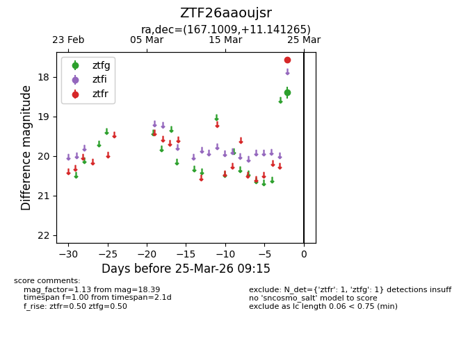
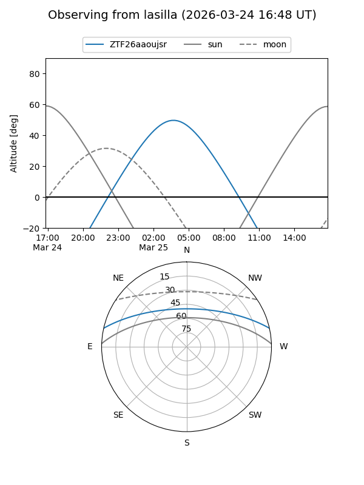
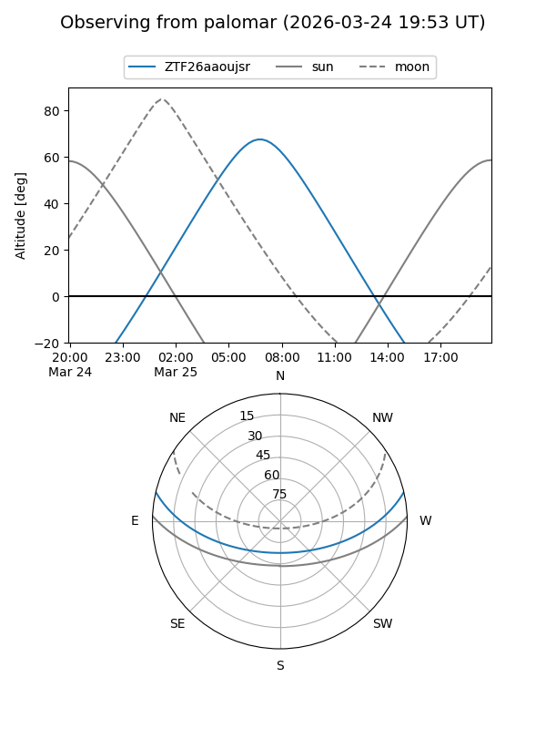

ZTF26aaoujsr
Target ZTF26aaoujsr at 2026-03-25 09:18
Aliases and brokers:
FINK: link
Lasair: link
ALeRCE: link
alt names
ZTF26aaoujsr (ztf,fink_ztf)
Coordinates:
equatorial (ra, dec) = 167.1009,+11.14126
equatorial (HMS+DMS) = 11:08:24.22,+11:08:28.55
galactic (l, b) = (241.3751,+60.99243)
Flags:
Photometry:
last ztfg=18.39, ztfr=17.57
1 ztfg, 1 ztfr detections
Lightcurve

Visibility


Additional plots